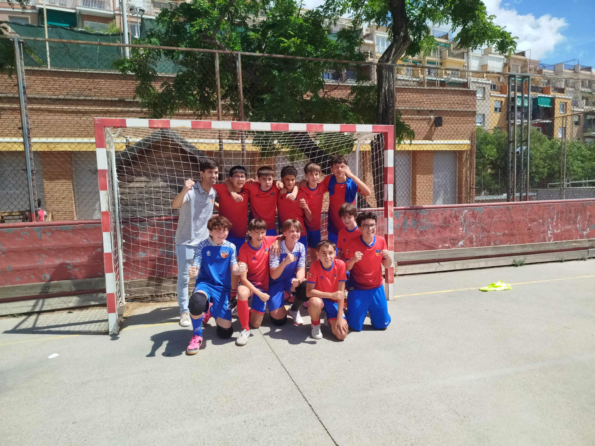
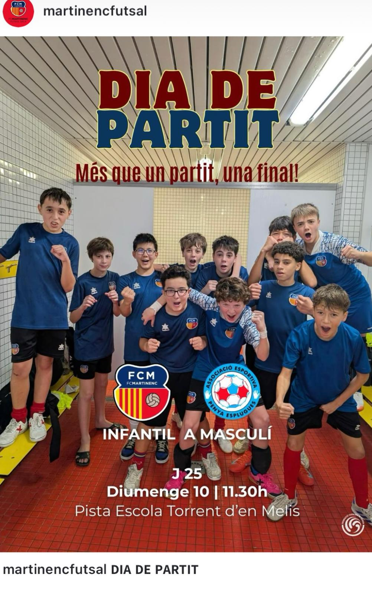
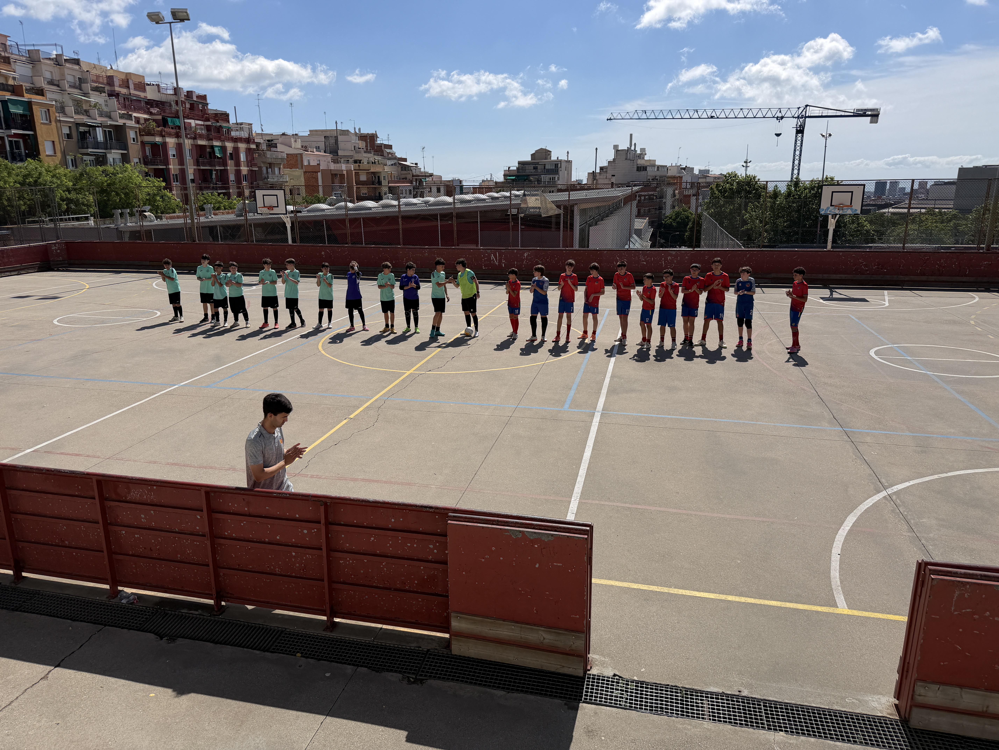

L'Infantil A supera la Penya Esplugues amb una actuació sòlida, una pressió molt ben executada i una segona part d'altíssima efectivitat.
Resultat final
FC Martinenc
Infantil A
6–0
Penya Esplugues
AE B

L'Infantil A del Martinenc va signar una victòria de gran valor davant un rival directe.
Els dos equips arribaven separats per només un punt.
Tots dos conjunts venien amb una dinàmica molt positiva.
Una victòria podia deixar la lliga a un partit de decidir-se.

La prèvia ja deixava clar que el partit tenia un component emocional i competitiu especial. El vídeo motivador preparat per David i la comunicació del club ajudaven a reforçar la sensació que l'equip estava davant d'un repte important. La resposta dels jugadors, vista després sobre la pista, va estar a l'altura d'aquesta preparació.
| # | Jugador |
|---|---|
| 17 | Kenzo Josep Acedo Fukuda |
| 14 | Dylan Botí Torres |
| 12 | Roc Casadejust Guasch |
| 19 | Christofer Leonel Espejo Garcia |
| 11 | Joel Espuñes Saurina |
| 26 | Bruno Gironella |
| 10 | Héctor Godes Mateo |
| 21 | Neo Menzinger Bosch |
| 13 | Nil Mestres Perez |
| 8 | Marçal Parramon Aubia |
| 7 | Héctor Vila Perez |
Entrenador: Carlos Casado
| Jugador |
|---|
| Joel Amaya de la Torre |
| Nil Arbués Jardí |
| Aleix Cayetano Lopez |
| Thiago Guida Llorente |
| Lucas Luengo Bestue |
| Ibo Mora Rivera |
| Xavier Picazo Valderrabano |
| Roc Sanjusto Patiño |
| Hugo Serrano Menjibar |
Tècnic: Pau Save Araño
Vídeos complets del partit
En els primers compassos, la Penya Esplugues no va sortir amb una pressió especialment alta. El seu bloc es va situar més aviat a mitja pista, cosa que va permetre al Martinenc trenar jugades amb més comoditat de l'esperada i arribar a la porteria rival des de molt aviat. El plantejament tàctic de Carlos Casado va començar donant resultat.
Al minut 5:00, en un servei de banda, Joel va deixar la pilota de taló perquè Héctor Godes, des de la frontal de l'àrea, rematés lleugerament desviat. Poc després, al 6:37, Marçal va servir des de la banda dreta i Kenzo va xutar des de la línia de tres quarts, també sense trobar porteria.
Fruit d'aquesta pressió, al 7:36, Christofer va robar una pilota al número 8 en ple centre del camp. Es va plantar a la frontal davant la pressió de dos defenses i el seu xut va sortir desviat per molt poc.
Al 10:02, la pressió de Christofer sobre el 25 va provocar un nou contraatac. Roc Sanjusto només va poder aturar-lo amb una falta que li va costar la primera targeta groga. Kenzo va executar la falta i la pilota va marxar per sobre del travesser, per poc.
Gol 1—0 · Min. 12:27
Bruno Gironella
Remat d'esquena bombejat, sorprenent el porter, après d'una falta precisa servida per Kenzo.
Veure el golDesprés del gol, l'Esplugues va intentar buscar pilotes penjades a dalt. Al 20:00, Héctor Godes va córrer al contraatac i, al primer toc, la va dirigir cap a porteria. El porter, molt atent, va refusar l'ocasió. La primera part va acabar amb el Martinenc per davant.
A la represa, Carlos va demanar als jugadors que continuessin pressionant i sent valents. Nil va sortir com a porter de la segona part. L'Esplugues va iniciar la represa amb un bloc molt més alt, però el Martinenc va trobar les solucions ràpidament.
Al 1:00, Christofer va trepitjar la pilota cap enrere i Roc, molt elèctric, la va conduir fins a l'àrea contrària. Al 1:30, una pilota llarga de Nil va trobar Christofer de cap dins l'àrea contrària.
Gol 2—0 · Min. 2:30 ST
Christofer Leonel Espejo Garcia
Recuperació alta, paret fulminant amb Roc i definició. Jugada rapidíssima, generosa i executada amb precisió.
Veure el golGol 3—0 · Min. 15:00 ST
Christofer Leonel Espejo Garcia
Rep d'esquena des d'una falta servida per Joel, es gira i xuta entre les cames del porter.
Veure el golAl 16:30, l'Esplugues va demanar temps mort i va provar de jugar amb cinc homes. El Martinenc va saber gestionar la situació i aprofitar els espais a l'esquena dels rivals.
Gol 4—0 · Min. 19:45 ST · HAT-TRICK
Christofer Leonel Espejo Garcia
Pilota llarga de Nil amb joc de peus. Christofer, emulant el gol de Cruyff, envia la pilota al fons de la xarxa.
Veure el golGol 5—0 · Min. 23:00 ST
Héctor Godes Mateo
Desmarcatge central, rep la pilota de Bruno, retall amb sang freda i pilota suaument al fons.
Veure el golGol 6—0 · Min. 24:00 ST
Héctor Godes Mateo
Nova acció directa. Mateixa recepta: retall, rivals descol·locats i segon gol personal.
Veure el golMin. 0–12
Domini Martinenc
Min. 13–25
Partit més obert
Min. 26–50
Domini i efectivitat Martinenc
Hat-trick
Christofer
Leonel Espejo
2 gols
Héctor
Godes Mateo
1 gol
Bruno
Gironella
El moment del partit
2—0 · Min. 2:30 ST
Christofer pressiona, recupera, condueix i troba Roc en paral·lel. Roc no busca el lluïment individual: torna la paret al primer toc i Christofer finalitza. És una jugada que explica moltes coses del Martinenc en aquest partit: intensitat, lectura, generositat i execució.
Veure la jugadaL'Infantil A va signar una de les actuacions més completes de la temporada.

El Martinenc va combinar pressió, joc directe i efectivitat.
La prèvia del partit ja apuntava la importància del duel.
| Competició | Lliga Tercera Divisió Infantil Futbol Sala — BCN Grup 8 |
| Data | Diumenge, 10 de maig de 2026 |
| Hora | 11:30 h |
| Local | FC Martinenc Infantil A |
| Visitant | Penya Esplugues AE B |
| Resultat | FC Martinenc 6 — 0 Penya Esplugues AE B |
| 1—0 | Bruno Gironella | 12:27 |
| 2—0 | Christofer Leonel Espejo Garcia | 2:30 ST |
| 3—0 | Christofer Leonel Espejo Garcia | 15:00 ST |
| 4—0 | Christofer Leonel Espejo Garcia | 19:45 ST |
| 5—0 | Héctor Godes Mateo | 23:00 ST |
| 6—0 | Héctor Godes Mateo | 24:00 ST |
| Roc Sanjusto | Penya Esplugues AE B |
| Joel Amaya | Penya Esplugues AE B |
Victòria de prestigi davant un rival directe
La porteria a zero, el hat-trick de Christofer, els dos gols d'Héctor Godes i la lectura col·lectiva del partit deixen una conclusió clara: l'equip arriba al tram final amb confiança, recursos i caràcter.
#SomMartinenc
Veure tots els gols